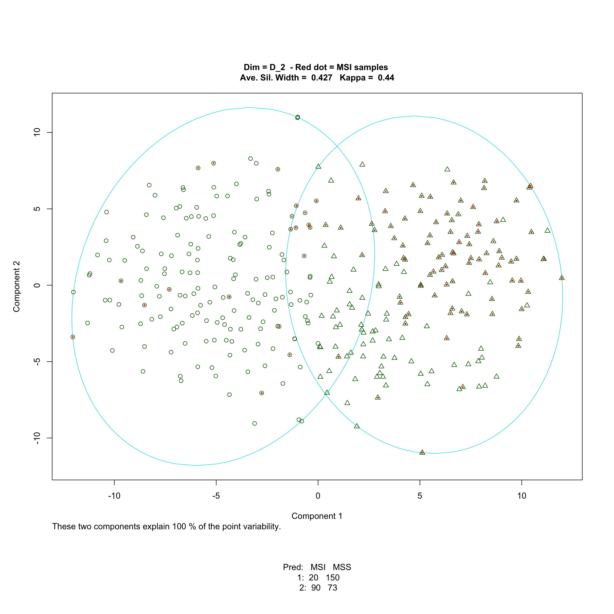
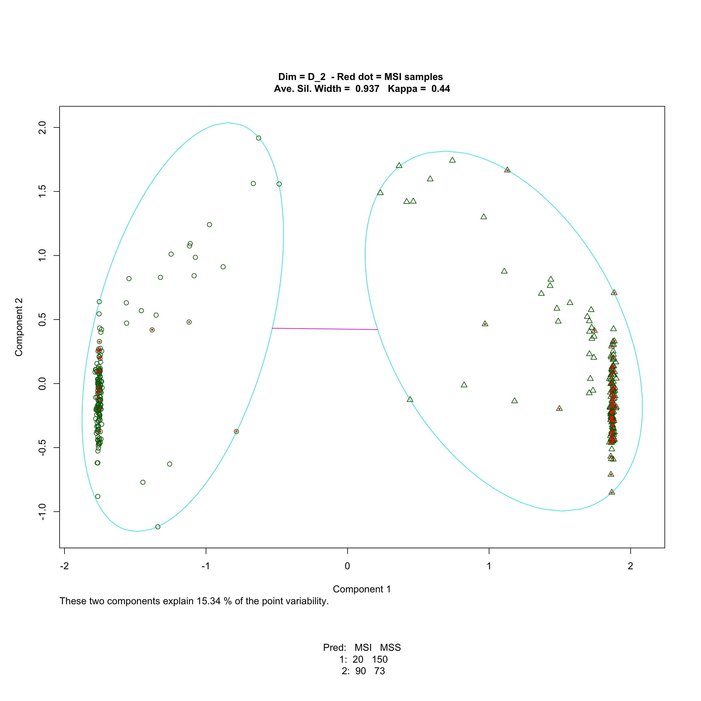

Section 5 Cluster Analysis
In some cases one may be interested in discovering sugroups of samples within the sampled population which are more homogenious than the popolation as a whole. Verhaak et. al. [35] describe an analysis pipeline for cluster discovery consisting of the following steps:
- Data collection and integration
- Identification of gene-expression based sub-types by cluster analysis
- Marker gene signature identification
- Clustering validation and assessment of clinical significance
In this section we will illustrate the cluster analysis step with two methods:
- Clustering based on partitioning around medoids (PAM) along with bootstrap aggregating (or Bagging).
- t-SNE
The PAM algorithm for clustering is described in detail in Kaufman and Rousseeuw [36]. t-SNE is described in here, with some illustrations here.
We will treat the MSS/MSI status of samples in our data set as unknown and see if the clustering algorithms can discover these hidden classes. A more interesting problem on the biological pint of view would be to try to discover truly unknown subgroups within the MSS and the MSI groups.
The PAM Clustering Algorithm
The PAM algorithm for clustering has some desirable attributes:
- the algorithm provides a way of estimating the number of clusters present in the data
- each point is assigned to a cluster and a measure of strength or confidence in the cluster assignment is provided for each individual observation
- cluster homogeneity can be assessed.
Underlying the PAM algorithm is a notion of similarity or proximity. Basically, the PAM clustering algorithm sorts out a set of samples into subgroups such that within each subgroup, samples are more similar to other members of the subgroup than to samples assigned to other subgroups.
To define the notion of proximity, suppose the gene expression indicators are stored in a matrix \(X\) with entries \(x_{ij}\) being the gene expression indicator on log base 2 scale for sample i gene j. Similarity among samples can be encapsulated by any of a number of measures of distance between the rows of the matrix \(X\). Some common choices are the Euclidean distance (average coordinate squared difference), the Manhattan distance (average coordinate absolute difference), and a suitably transformed measure of correlation (2 – Pearson correlation, for example). More generally, any weighted average of a coordinate specific measure of similarity can be used as a measure of sample similarity.
It is important to point out that for any fixed choice of distance quite different clustering results can be obtained depending on the selection of genes, or probe sets, used to compute the sample to sample distances. This is important to note because it is often necessary to apply a screen to subset genes or probe sets at the outset. This is sometimes done to improve the computing efficiency of the analysis process. Our experience with these data shows that if no screening is applied and all 50K+ probe sets are used to compute sample similarity measures, the clustering procedures are unable to detect even obvious structure in the data – the distinction between MSS and MSI samples, for example. In this analysis, we applied a fairly aggressive screen based on the overall data set variability of expression indicators. It might be advisable to apply the variability constraint to within data set variability to avoid selecting probe sets that may have high overall variability due to between data set artifactual variation. This wasn’t done here.
Having computed a distance or dissimilarity matrix, the PAM algorithm proceeds iteratively as follows:
- For fixed k (pre-specified number of clusters), select k representative samples arbitrarily.
- Each sample of the data set is assigned to the nearest medoid.
- Update medoids by minimizing the objective function
Repeat steps 2-3 until there is no further change.
To measure confidence in the cluster assignment for each sample, and to get a sense of cluster homogeneity, the notion of silhouette is used. The silhouette score is a normalized score: \[s_i = \frac{b_i – a_i}{max(a_i, b_i)}\] where
- \(a_i\) = average distance between sample i and all other samples within the cluster i is assigned to, and
- \(b_i\) = minimum average distance between sample i and samples in other clusters.
Individual clusters can be characterized by average silhouette width. The clustering or partitioning of a dataset can be summarized by the overall average silhouette width and his can be used to select the number of clusters, k, that best describes the structure in the data set.
Bootstrap Aggregating of Clusters
The application of bagging to clustering is discussed in Dudoit and Fridlyand [37].
Bootstrap aggregation entails performing the clustering analysis repeatedly on bootstrap subsets of samples – sample sets resulting from randomly selecting samples from the original set of samples. The clustering results for the bootstrap samples are then pooled, or aggregated, to produce the final clustering results. Two methods of aggregation are proposed in Dudoit and Fridlyand [37]. One method (BagClust1) allocates samples to clusters according to a voting scheme. The other method (BagClust2) uses the relative frequency across bootstrap samples with which sample pairs are clustered together as a new measure of distance which is then used by the PAM algorithm to cluster the samples. In our exploration we have found the two approaches to give rise to comparable results. We find the latter to be preferable as the distance matrix used for aggregating the bootstrap clustering results can be used like any other distance matrix to assess confidence in sample assignments and overall clustering homogeneity.
Alternative methods of bagging clusters exist.
buster is an R package which implements
some form of bagging of hierarchical clustering results. Li [38]
discusses a bagged clustering algorithm which is resistent to outliers and scalable.
Clustering preliminaries - load data and set parameters.
# Load Data loadObj(paste0(‘Train.’,SelGenes,‘.vec’), ‘SelGenes.vec’)
load(file=file.path(‘RData’, ‘Train.Expr.mtx’)) Train.SelGenes.Expr.mtx <- Train.Expr.mtx[, SelGenes.vec] rm(Train.Expr.mtx)
load(file=file.path(‘RData’, ‘Train.Label.vec’)) load(file=file.path(‘RData’, ‘Train.DataSource.vec’))
#### Clustering Parmeters:
- SelGenes = Top30pVarGenes
- Distance Metric = euclidean
- Standardize = TRUE
## PAM Clustering
We start by performing a standard PAM cluster analysis of the data.
To quantify the concordance between the discoverd clusters and the MSS/MSI
labels, we can compute [Cohen's Kappa](https://en.wikipedia.org/wiki/Cohen%27s_kappa).
```r
suppressMessages(require(stats))
suppressMessages(require(cluster))
Expr.mtx <- Train.SelGenes.Expr.mtx
# Standardize?
if(STAND) Expr.mtx <- scale(Expr.mtx)
# Get dissimilarity
{if(DM == "1-pearson")
Expr.dist <- as.dist(1-cor(t(Expr.mtx))) else
Expr.dist <- daisy(Expr.mtx, DM)
}
# get ave sil width for range of K
asw.vec <- sapply(2:5, function(kk) pam(Expr.dist, diss=T, k=kk)$silinfo$avg.width)
names(asw.vec) <- paste0('K_', 2:5)
print(round(asw.vec,3))## K_2 K_3 K_4 K_5
## 0.020 0.012 0.010 0.004PAM returns the correct number of clusters, if we are trying to recover the MSS/MSI subgroups. Let us look at what the clustering looks like.
###, results='hold'} this r chunk option doesn't appear to work!
suppressMessages(require(cluster))
BestK <- as.numeric(sub('K_','', names(asw.vec)[which.max(asw.vec)]))
# Make sure Expr.dist hasn't changed!
Expr.pam <- pam(Expr.dist, k=BestK, keep.diss=T)
# Look at agreement with MSS label
Pam.agree.tbl <- table(Expr.pam$clustering, Train.Label.vec)
# Compute kappa for display on figure
# (Only makes sense for BestK==2)
kappa.v <- NA
if(BestK == 2) kappa.v <- getKappa(Expr.pam$clustering, Train.Label.vec)## Loading required package: concord #######################################
# Visualization
#######################################
old_par <- par(mfrow=c(1,1), oma=c(8,1,5,1), #mar=c(4.2, 3.2, 1.1, 0.2),
#bg=rgb(0,0,.606),fg=7,col.axis=7,col.lab=7,col.main=7, col.sub=7,
cex.main=1.0,cex.lab=1.0,cex.axis=1.0)
# DEBUG
#save(Expr.pam, file=file.path(WRKDIR,'Data', 'Expr.pam'))
#THIS DOEST WORK ANY MORE
SKIP <- function() {
plot(Expr.pam,main='')
mtext2by2Tbl(Pam.agree.tbl)
}# SKIP
###################################
clusplot(Expr.pam, main='')###, pch=DataSource.pch)
### Recolor samples according to MSS/MSI status
#xD <- eval(Expr.pam$call[[2]])
xD <- Expr.pam$diss
x1 <- cmdscale(xD, k=2, eig=T, add=T)
if(x1$ac < 0)
x1 <- cmdscale(xD, k=2, eig=T)
#var.dec <- x1$GOF[2]
x1 <- x1$points
points(x1[,1][Train.Label.vec=='MSI'], x1[,2][Train.Label.vec=='MSI'],
pch='.',cex=3, col='red')
# add 2x2 tbale in margin
mtext2by2Tbl(Pam.agree.tbl)
title(paste('Red dot = MSI samples',
'\nAve. Sil. Width = ', round(Expr.pam$silinfo$avg.width,3),
' Kappa = ', round(kappa.v,3))) par(old_par)Although the MSS and MSI somewhat colocate on the two dimensional projection of their gene expression vectors, one would be hard-pressed to make the case that clusters exist in these data. Next we’ll see if bootstrap aggregation helps.
5.1 Bootstrap Aggregation of Clusters
Next we will implement the baaged clustering procedure, BagClust2:
For a fixed number of clusters K:
- Initialize matrices \(A_{nxn}\) and \(M_{nxn}\) to zeroes.
Repeat 2-4 N_BOOT times:
2. Form the $b^{th}$ bootstrap sample, Bt_Samp
3. Cluster Bt_Samp to obtain cluster labels Bt_Clust
4. For each pair of samples in Bt_Samp, s1, s2
- increment $M_{s1,s1}$
- increment $A_{s1,s1}$ if s1 and s2 co-cluster in the $b^{th}$ bootstarp sample. end repeat.
- Define a new dissimilarity matrix \(D = 1 - A/M\)
- Cluster samples on the basis of this dissimilarity matrix.
suppressMessages(require(cluster))
suppressMessages(require(stats))
N_BOOT <- 30
# initialize list to store BagCLust results
SelGenes.BagClust.pam.lst <- list()
for(KK in 2:5) {
# Initialize counting matrices
A.mtx <- matrix(0, ncol=length(Train.Label.vec),
nrow=length(Train.Label.vec))
rownames(A.mtx) <- names(Train.Label.vec)
colnames(A.mtx) <- names(Train.Label.vec)
M.mtx <- matrix(0, ncol=length(Train.Label.vec),
nrow=length(Train.Label.vec))
rownames(M.mtx) <- names(Train.Label.vec)
colnames(M.mtx) <- names(Train.Label.vec)
# Repeat 2-4 B times
# 2. Form the b_th bootstrap sample Bt_Samp =
# sample(Samp.vec, size=N_Samp, replace=T)
# 3. Cluster to obtain cluster labels Bt_Clust for samples in Bt_Samp
# 4. For each pair of samples in Bt_Samp, s1, s2,
# - increment M[s1,s2]
# - increment A[s1,s1] if Bt_Clust[s1] == Bt_Clust[2]
# end repeat
for(BB in 1:N_BOOT){
cat('.')
# 2. form the BS sample
B_Samp <- sample(names(Train.Label.vec), size=length(Train.Label.vec), replace=T)
Expr.B.mtx <- Expr.mtx[B_Samp,]
# Get dissimilarity
{if(DM == "1-pearson")
Expr.B.dist <- as.dist(1-cor(t(Expr.B.mtx))) else
Expr.B.dist <- daisy(Expr.B.mtx, DM)
}
rm(Expr.B.mtx)
# 3. cluster
Expr.B.pam <- pam(Expr.B.dist, k=KK)
# 4. For each pair of samples in Bt_Samp, s1, s2,
# - increment M[s1,s2]
# - increment A[s1,s1] if Bt_Clust[s1] == Bt_Clust[2]
B_Samp.lst <- unique(B_Samp)
M.mtx[B_Samp.lst, B_Samp.lst] <- M.mtx[B_Samp.lst, B_Samp.lst] + 1
# patition in list
B_Samp.Cluster <- Expr.B.pam$clustering[B_Samp.lst]
B_Samp.Clust.lst <- split(B_Samp.lst, B_Samp.Cluster)
for(LL in 1:length(B_Samp.Clust.lst)) {
Clust.Samp <- B_Samp.Clust.lst[[LL]]
A.mtx[Clust.Samp, Clust.Samp] <- A.mtx[Clust.Samp, Clust.Samp] + 1
}
} # end BB loop
cat('\n')
# 5. Define new dissimilariy matirx D = 1 - A/M
D.mtx <- A.mtx/M.mtx
D.mtx[is.na(D.mtx)] <- 0
# 6. Cluster observations on the basis of this dissimilarity matrix
D.dist <- as.dist(1-D.mtx)
SelGenes.BagClust.pam.lst[[paste0('K_',KK)]] <- pam(D.dist, k=KK, keep.diss=T)
cat('KK =',KK, ' sil.avg.width =', SelGenes.BagClust.pam.lst[[paste0('K_',KK)]]$silinfo$avg.width, '\n')
}#for(KK## ..............................
## KK = 2 sil.avg.width = 0.2822617
## ..............................
## KK = 3 sil.avg.width = 0.2749272
## ..............................
## KK = 4 sil.avg.width = 0.2862272
## ..............................
## KK = 5 sil.avg.width = 0.1644449 ## save
saveObj(paste0(SelGenes, '.BagClust.pam.lst'), 'SelGenes.BagClust.pam.lst') suppressMessages(require(cluster))
loadObj(paste0(SelGenes, '.BagClust.pam.lst'), 'SelGenes.BagClust.pam.lst')
# Get best K model
BagClustBestK <- names(SelGenes.BagClust.pam.lst)[which.max(sapply(SelGenes.BagClust.pam.lst,
function(x) x$silinfo$avg.width))]
BagClustBestK.pam <- SelGenes.BagClust.pam.lst[[BagClustBestK]]
# Get agreement table
BagClustBestK.pam.agree.tbl <- table(BagClustBestK.pam$clustering, Train.Label.vec)
#Compute kappa for display on figure
# (Only makes sense for KK==2)
if(BagClustBestK == paste0('K_',2))
kappa.v <- getKappa(BagClustBestK.pam$clustering, Train.Label.vec)
#cat('kappa =', kappa.v, '\n')
#######################################
# Visualization
#######################################
old_par <- par(mfrow=c(1,1), oma=c(8,1,5,1), #mar=c(4.2, 3.2, 1.1, 0.2),
#bg=rgb(0,0,.606),fg=7,col.axis=7,col.lab=7,col.main=7, col.sub=7,
cex.main=1.0,cex.lab=1.0,cex.axis=1.0)
#plot(BagClustBestK.pam,main='')
clusplot(BagClustBestK.pam, main='')###, pch=DataSource.pch)
### Recolor samples according to MSS/MSI status
#xD <- eval(BagClustBestK.pam$call[[2]])
xD <- BagClustBestK.pam$diss
x1 <- cmdscale(xD, k=2, eig=T, add=T)
if(x1$ac < 0)
x1 <- cmdscale(xD, k=2, eig=T)
#var.dec <- x1$GOF[2]
x1 <- x1$points
points(x1[,1][Train.Label.vec=='MSI'], x1[,2][Train.Label.vec=='MSI'],
pch='.',cex=3, col='red')
# add 2x2 tbale in margin
mtext2by2Tbl(BagClustBestK.pam.agree.tbl)
title(paste('Red dot = MSI samples',
'\nAve. Sil. Width = ', round(BagClustBestK.pam$silinfo$avg.width,3),
' Kappa = ', round(kappa.v,3))) par(old_par)The groupings discovered by BagClust2 are essentially the same as those discovered by the PAM cluster analysis. The main effect of the bagging is to reduce noise and provide better separation between groups, which greatly increases our confidence in the groupings.
Next we look at the application of t-SNE algorithm to this problem.
5.2 t-SNE
t-SNE is a dimensionality reduction techique that is particularly well suited for the visualization of high-dimensional datasets. Here we will use the t-SNE algorithm to reduce the gene expression data martrix to a few dimensions. These will then be used as inputs to some clustering algorithm for the purpose of discovering subgroups in the data. Here we will assess the benefit of the t-SNE embedding by repeating the cluster analysis above - PAM and BagClust2 clustering - using the t-SNE embedding as input instead of the scales expression matrix.
# Load Data
loadObj(paste0('Train.',SelGenes,'.vec'), 'SelGenes.vec')
load(file=file.path('RData', 'Train.Expr.mtx'))
Train.SelGenes.Expr.mtx <- Train.Expr.mtx[, SelGenes.vec]
rm(Train.Expr.mtx)
load(file=file.path('RData', 'Train.Label.vec'))
load(file=file.path('RData', 'Train.DataSource.vec')) suppressMessages(require(Rtsne))
PERP <- 50
SelGenes.tsne.lst <- list()
#for(DD in c(2,5,10))
for(DD in c(2, 3))
SelGenes.tsne.lst[[paste0('D_', DD)]] <-
Rtsne(Train.SelGenes.Expr.mtx, check_duplicates=FALSE,
pca=TRUE, pca_center=T, pca_scale=T,
perplexity=PERP, theta=0.0, dims=DD, max_iter = 5000)
saveObj(paste0(SelGenes, '.tsne.lst'), 'SelGenes.tsne.lst')5.2.1 t-SNE + PAM
suppressMessages(require(stats))
suppressMessages(require(cluster))
loadObj(paste0(SelGenes, '.tsne.lst'), 'SelGenes.tsne.lst')
tsne.asw.mtx <- do.call('rbind', lapply(names(SelGenes.tsne.lst),
function(DD) {
Expr.mtx <- SelGenes.tsne.lst[[DD]]$Y
# Standardize?
#if(STAND) Expr.mtx <- scale(Expr.mtx)
# Get dissimilarity
{if(DM == "1-pearson")
Expr.dist <- as.dist(1-cor(t(Expr.mtx))) else
Expr.dist <- daisy(Expr.mtx, DM)
}
# get ave sil width for range of K
asw.vec <- sapply(2:5, function(kk) pam(Expr.dist, diss=T, k=kk)$silinfo$avg.width)
names(asw.vec) <- paste0('K_', 2:5)
asw.vec}))
rownames(tsne.asw.mtx) <- names(SelGenes.tsne.lst)
print(round(tsne.asw.mtx,3))## K_2 K_3 K_4 K_5
## D_2 0.427 0.394 0.391 0.367
## D_3 0.346 0.329 0.300 0.287PAM clustering based on t-SNE embeddings of various dimensions does not return allow us to discriminate among the number of clusters based on average silhouette width. Let’s see what the 2-D scatters look like as well as the PAM clustering into two groups.
suppressMessages(require(cluster))
loadObj(paste0(SelGenes, '.tsne.lst'), 'SelGenes.tsne.lst')
for(DD in names(SelGenes.tsne.lst)){
Expr.mtx <- SelGenes.tsne.lst[[DD]]$Y
# Standardize?
#if(STAND) Expr.mtx <- scale(Expr.mtx)
# Get dissimilarity
{if(DM == "1-pearson")
Expr.dist <- as.dist(1-cor(t(Expr.mtx))) else
Expr.dist <- daisy(Expr.mtx, DM)
}
#for(KK in 2:5) {
KK <- 2
Expr.pam <- pam(Expr.dist, diss=T, k=KK, keep.diss=T)
Pam.agree.tbl <- table(Expr.pam$clustering, Train.Label.vec)
kappa.v <- getKappa(Expr.pam$clustering, Train.Label.vec)
#######################################
# Visualization
#######################################
old_par <- par(mfrow=c(1,1), oma=c(8,1,5,1), #mar=c(4.2, 3.2, 1.1, 0.2),
#bg=rgb(0,0,.606),fg=7,col.axis=7,col.lab=7,col.main=7, col.sub=7,
cex.main=1.0,cex.lab=1.0,cex.axis=1.0)
#plot(Expr.pam,main='')
###################################
clusplot(Expr.pam, main='')###, pch=DataSource.pch)
### Recolor samples according to MSS/MSI status
#xD <- eval(Expr.pam$call[[2]])
xD <- Expr.pam$diss
x1 <- cmdscale(xD, k=2, eig=T, add=T)
if(x1$ac < 0)
x1 <- cmdscale(xD, k=2, eig=T)
#var.dec <- x1$GOF[2]
x1 <- x1$points
points(x1[,1][Train.Label.vec=='MSI'], x1[,2][Train.Label.vec=='MSI'],
pch='.',cex=3, col='red')
# add 2x2 tbale in margin
mtext2by2Tbl(Pam.agree.tbl)
title(paste('Dim =', DD, ' - Red dot = MSI samples',
'\nAve. Sil. Width = ', round(Expr.pam$silinfo$avg.width,3),
' Kappa = ', round(kappa.v,3)))
par(old_par)
}#for(DD
PAM applied to t-SNE embeddings produce larger silhuoette profiles than PAM applied to the gene expression data. Let’s see how bagging helps here.
5.2.2 t-SNE + BagClust2
An important parameter in the application of t-SNE to clustering is the number of dimensions used in the t-SNE embedding. We will assess the effect of this parameter here, keeping the specified number of clusters fixed at k=2 while varying the number of embedding dimensions.
suppressMessages(require(cluster))
suppressMessages(require(stats))
KK <- 2
loadObj(paste0(SelGenes, '.tsne.lst'), 'SelGenes.tsne.lst')
load(file=file.path('RData', 'Train.Label.vec'))
N_BOOT <- 30
# initialize list to store BagCLust results
SelGenes.tsneBagClust.pam.lst <- list()
for(DD in names(SelGenes.tsne.lst)){
Expr.mtx <- SelGenes.tsne.lst[[DD]]$Y
# Add rownames (assuming order is correct!)
rownames(Expr.mtx) <- names(Train.Label.vec)
# Initialize counting matrices
A.mtx <- matrix(0, ncol=length(Train.Label.vec),
nrow=length(Train.Label.vec))
rownames(A.mtx) <- names(Train.Label.vec)
colnames(A.mtx) <- names(Train.Label.vec)
M.mtx <- matrix(0, ncol=length(Train.Label.vec),
nrow=length(Train.Label.vec))
rownames(M.mtx) <- names(Train.Label.vec)
colnames(M.mtx) <- names(Train.Label.vec)
# Repeat 2-4 B times
# 2. Form the b_th bootstrap sample Bt_Samp =
# sample(Samp.vec, size=N_Samp, replace=T)
# 3. Cluster to obtain cluster labels Bt_Clust for samples in Bt_Samp
# 4. For each pair of samples in Bt_Samp, s1, s2,
# - increment M[s1,s2]
# - increment A[s1,s1] if Bt_Clust[s1] == Bt_Clust[2]
# end repeat
for(BB in 1:N_BOOT){
cat('.')
# 2. form the BS sample
B_Samp <- sample(names(Train.Label.vec), size=length(Train.Label.vec), replace=T)
Expr.B.mtx <- Expr.mtx[B_Samp,]
# Get dissimilarity
{if(DM == "1-pearson")
Expr.B.dist <- as.dist(1-cor(t(Expr.B.mtx))) else
Expr.B.dist <- daisy(Expr.B.mtx, DM)
}
rm(Expr.B.mtx)
# 3. cluster
Expr.B.pam <- pam(Expr.B.dist, k=KK)
# 4. For each pair of samples in Bt_Samp, s1, s2,
# - increment M[s1,s2]
# - increment A[s1,s1] if Bt_Clust[s1] == Bt_Clust[2]
B_Samp.lst <- unique(B_Samp)
M.mtx[B_Samp.lst, B_Samp.lst] <- M.mtx[B_Samp.lst, B_Samp.lst] + 1
# patition in list
B_Samp.Cluster <- Expr.B.pam$clustering[B_Samp.lst]
B_Samp.Clust.lst <- split(B_Samp.lst, B_Samp.Cluster)
for(LL in 1:length(B_Samp.Clust.lst)) {
Clust.Samp <- B_Samp.Clust.lst[[LL]]
A.mtx[Clust.Samp, Clust.Samp] <- A.mtx[Clust.Samp, Clust.Samp] + 1
}
} # end BB loop
cat('\n')
# 5. Define new dissimilariy matirx D = 1 - A/M
D.mtx <- A.mtx/M.mtx
D.mtx[is.na(D.mtx)] <- 0
# 6. Cluster observations on the basis of this dissimilarity matrix
D.dist <- as.dist(1-D.mtx)
SelGenes.tsneBagClust.pam.lst[[DD]] <- pam(D.dist, k=KK, keep.diss=T)
cat('DD =',DD, ' sil.avg.width =', SelGenes.tsneBagClust.pam.lst[[DD]]$silinfo$avg.width, '\n')
}#for(DD## ..............................
## DD = D_2 sil.avg.width = 0.9368571
## ..............................
## DD = D_3 sil.avg.width = 0.8470974 ## save
saveObj(paste0(SelGenes, '.tsneBagClust.pam.lst'), 'SelGenes.tsneBagClust.pam.lst') suppressMessages(require(cluster))
loadObj(paste0(SelGenes, '.tsneBagClust.pam.lst'), 'SelGenes.tsneBagClust.pam.lst')
load(file=file.path('RData', 'Train.Label.vec'))
# Get best K model
BagClustBestD <- names(SelGenes.tsneBagClust.pam.lst)[which.max(sapply(SelGenes.tsneBagClust.pam.lst,
function(x) x$silinfo$avg.width))]
BagClustBestD.pam <- SelGenes.tsneBagClust.pam.lst[[BagClustBestD]]
# Get agreement table
BagClustBestD.pam.agree.tbl <- table(BagClustBestD.pam$clustering, Train.Label.vec)
#Compute kappa for display on figure
# (Only makes sense for KK==2)
kappa.v <- getKappa(BagClustBestD.pam$clustering, Train.Label.vec)
#cat('kappa =', kappa.v, '\n')
#######################################
# Visualization
#######################################
old_par <- par(mfrow=c(1,1), oma=c(8,1,5,1), #mar=c(4.2, 3.2, 1.1, 0.2),
#bg=rgb(0,0,.606),fg=7,col.axis=7,col.lab=7,col.main=7, col.sub=7,
cex.main=1.0,cex.lab=1.0,cex.axis=1.0)
#plot(BagClustBestD.pam,main='')
###################################
clusplot(BagClustBestD.pam, main='')###, pch=DataSource.pch)
### Recolor samples according to MSS/MSI status
#xD <- eval(BagClustBestD.pam$call[[2]])
xD <- BagClustBestD.pam$diss
x1 <- cmdscale(xD, k=2, eig=T, add=T)
if(x1$ac < 0)
x1 <- cmdscale(xD, k=2, eig=T)
#var.dec <- x1$GOF[2]
x1 <- x1$points
points(x1[,1][Train.Label.vec=='MSI'], x1[,2][Train.Label.vec=='MSI'],
pch='.',cex=3, col='red')
# add 2x2 tbale in margin
mtext2by2Tbl(BagClustBestD.pam.agree.tbl)
title(paste('Dim =', BagClustBestD, ' - Red dot = MSI samples',
'\nAve. Sil. Width = ', round(BagClustBestD.pam$silinfo$avg.width,3),
' Kappa = ', round(kappa.v,3)))
par(old_par)5.3 Cluster Analysis: Discussion
The PAM algorithm does a decent job at “discovering” the MSS vs MSI grouping in an unsupervised analysis of the gene expression vectors. In this analysis, we restricted the analysis to the Top30pVarGenes gene set. A different gene selection might give rise to sligthly different results.
Bootstrap aggregation of PAM clustering results leads to cleaner separation among the groups but very little difference in the allocation of samples to groups. This is as expected. Bagging in thise case is a noise reduction measure.
Applying the t-SNE algorithm to extract low dimensional embeddings of the gene expression vectors and applying the PAM algorthim to these data leads to some improved clustering results: separation of the groups is larger than is the results of applying PAM directly to the gene expression data.
Bootstrap aggregation of results of applying PAM clustering to t-SNE embeddings leads to improved separation between groups and a slight improvement in the coherence between clusters and MSS vs MSI labels.
It appears that both t-SNE embeddings and bootstrap aggregation are helpful in producing better separated clusters in this context. We have only skimmed the surface of cluster analysis of gene expression data in this vignette. We did not look at the propensity of the different approaches to produce fals positive results - the appearance of clusters when non exist. We also did not investigate the effect of the choice of value for the many parameters that can be adjusted in these analyses. In any given situation, the sensitivity of results produced by a method to changes in parameter settings or slight perturbations of the data is an important part of cluster analysis.